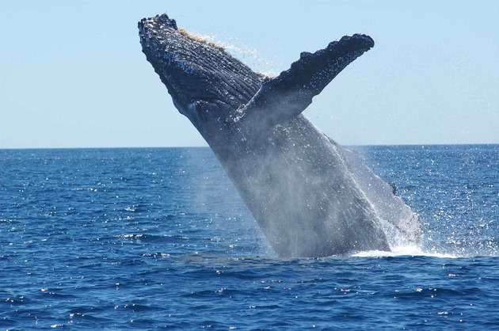
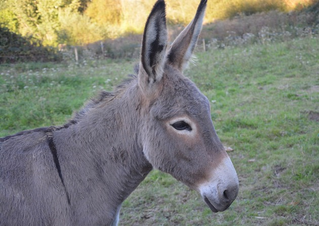

Baleia
Mysticeti
| Reino: | Animalia |
| Classe: | Mammalia |
Mysticeti é um grupo monofilético que pertence à ordem Cetacea, a
qual compreende animais terrestres que, ao longo da evolução, retornaram ao ambiente aquático, tendo esse
retorno sido marcado pela mudança gradual da posição das narinas. Nos primeiros cetáceos, as narinas
estavam localizadas próximas à extremidade do focinho e, à medida que esses animais foram se adaptando cada
vez ao ambiente aquático, a seleção natural favoreceu os organismos com ossos nasais mais retraídos e
aberturas nasais mais próximas ao topo do crânio.
Há dois grupos de cetáceos viventes: misticetos (cetáceos com barbatanas) e
odontocetos (cetáceos com dentes), tendo a divergência entre eles ocorrido, a partir de um ancestral
comum arqueoceto há cerca de 35 Ma, segundo o registro fóssil, e entre 30.5–35Ma, segundo dados
moleculares.
Os misticetos, apesar de serem caracterizados como portadores de barbatanas, incluem
espécies fósseis que possuíam dentes.
Burro
Equus asinus
| Reino: | Animalia |
| Classe: | Mammalia |
O Asno (nome científico: Equus africanus asinus) é uma
subespécie doméstica do Asno-selvagem-africano. É um mamífero perissodáctilo da família Equidae, cujo nome
popular é jumento, jegue, jerico, burro
ou ainda asno-doméstico. De tamanho médio (conforme a raça), focinho e orelhas compridas, é
utilizado desde a Pré-história como animal de carga. Os ancestrais selvagens dos asnos foram domesticados
por volta de 5 000 a.C., praticamente ao mesmo tempo que os cavalos, e, desde então, têm sido utilizados
pelos homens como animais de carga e montaria.
No Brasil, o termo "burro" pode designar não a espécie Equus africanus asinus,
mas o cruzamento entre essa espécie e a Equus ferus caballus (cavalo) quando resulta num animal de
gênero macho, aquilo que em Portugal se designa como "macho"; quando esse mesmo cruzamento resulta num
espécime fêmea, é designado como "mula".
Os asnos classificam-se dentro da ordem dos Perissodáctilos, e à família Equidae, à
qual também pertencem os cavalos, pertencendo ambos a um único gênero, os Equídeos (Equus).